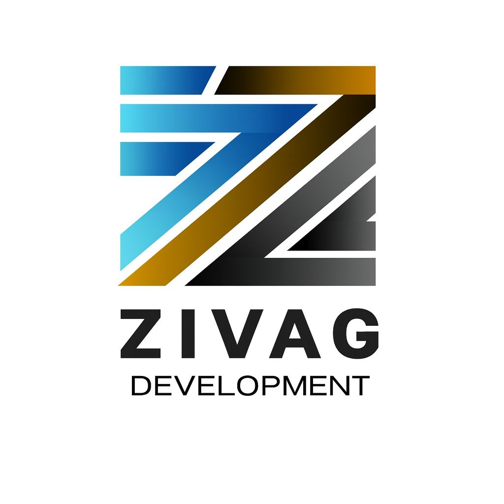

Software & Systeme
Installation, Updates, Konfiguration und Hilfe bei Fehlern oder langsamen Anwendungen.

ZIVAGDEVELOPMENTProjekt anfragen ↗ZIVAG DEVELOPMENT · MANNHEIM
WEB / DESIGN / ITDIGITAL DENKEN. WEITERGEHEN.
Ein Auftritt, der Eindruck macht. Technik, die mitdenkt. Wir verbinden Webentwicklung, Design und IT – damit Ihr Unternehmen weiterkommt.
Was möchten Sie bewegen?
01 / DIGITAL EXPERIENCE
Von der Unternehmenswebsite bis zum Onlineshop: klar gestaltet, intuitiv bedienbar und passend zu Ihrer Marke.
Ein Partner für Ihren digitalen Auftritt.
Und die Technik dahinter.
UNSER PARTNER
Frenks Ristorante · Mannheim
01 / WAS WIR TUN
Ein starker Auftritt braucht mehr als gutes Design. Wir denken Website, Marke und IT zusammen.
Ein Auftritt, der zu Ihnen passt. Individuell gestaltet, klar aufgebaut und für Smartphone, Tablet und Desktop entwickelt. Damit Ihre Kunden schnell finden, was zählt.
Onlineshops mit durchdachter Produktpräsentation und verständlichen Kaufwegen. Wir planen Struktur, Gestaltung und die passende technische Umsetzung für Ihr Sortiment.
Ein wiedererkennbarer visueller Auftritt. Von Farben und Typografie bis zu digitalen Inhalten – mit einer Designsprache, die sich durch Ihre Marke zieht.
Wenn die Technik nicht mitspielt: Wir unterstützen bei Softwareproblemen, Hardware, Arbeitsplatz-Einrichtung, Netzwerken, E-Mail und Druckern. Nach einer ersten Einschätzung stimmen wir die nächsten Schritte mit Ihnen ab.
Ihre Marke dort, wo Ihre Kunden sind. Social-Media-Betreuung, Kampagnen, SEO, Inhalte und Videos – abgestimmt auf Ihre Zielgruppe und Ihren Auftritt.
TECHNIK SOLL HELFEN. NICHT AUFHALTEN.
Ein langsamer PC, ein streikender Drucker oder eine Software, die nicht mehr startet? Beschreiben Sie uns das Problem. Wir klären gemeinsam, welche Unterstützung sinnvoll ist.
IT-Anfrage senden ↗Lieber direkt sprechen? +49 1525 3050 480Installation, Updates, Konfiguration und Hilfe bei Fehlern oder langsamen Anwendungen.
Fehlersuche und Unterstützung für PCs, Laptops, Drucker und angeschlossene Geräte.
Hilfe bei WLAN, Internet, Netzwerkzugriff und der Verbindung Ihrer Arbeitsgeräte.
E-Mail-Konten, Benutzerprofile und Arbeitsplätze für neue Mitarbeiter einrichten.
02 / AUSGEWÄHLTE PROJEKTE
Von Gastronomie bis Automotive.
Websites mit einer eigenen Persönlichkeit.
Restaurant-Website
Atmosphäre, italienische Küche und der direkte Weg zur Reservierung.
Online-Bestellung
Von der Speisekarte zur Bestellung. Ein digitaler Zugang zum Lieferservice.
Eigenes Projekt · Automotive
Ein markanter Webauftritt für Fahrzeuge, Präsentation und Kontakt.
Ein Abend, der bleibt.
ENTDECKEN ↗Gastronomie · Webdesign · Art Direction
Form trifft Funktion.
Lifestyle · E-Commerce · Brand Experience
Casa und Forma sind Designstudien, keine Kundenreferenzen.
03 / DAS STUDIO
Eine starke Marke.
Eine funktionierende digitale Basis.
Hinter ZIVAG steht Gezim Çela: Webentwickler mit Erfahrung in Frontend, Backend und Hardware-Reparatur. Diese Verbindung aus Gestaltung und Technik prägt unsere Arbeit – vom ersten Entwurf bis zur Unterstützung im IT-Alltag. Persönlich, direkt und mit Blick auf Ihr Unternehmen.
Gezim Çela kennenlernen ↗Ein Ansprechpartner. Klare Absprachen.
Ihre Marke gibt die Richtung vor.
Eine solide Basis, die sich weiterentwickeln lässt.
04 / SO ENTSTEHT IHR AUFTRITT
Wir sprechen über Ihr Unternehmen, Ihre Kunden und darüber, was Ihr neuer Auftritt leisten soll.
Aus Struktur, Inhalten und Design entsteht ein Konzept, das wir gemeinsam mit Ihnen verfeinern.
Wir setzen das Design um und prüfen Darstellung, Bedienung und Funktion auf verschiedenen Geräten.
Nach Ihrer Freigabe geht Ihre Website online. Die nächsten Schritte stimmen wir gemeinsam ab.
DER NÄCHSTE SCHRITT BEGINNT MIT EINEM GESPRÄCH.
LET’S BUILD SOMETHING.Erzählen Sie uns, was Sie vorhaben.
Wir freuen uns, Sie kennenzulernen.